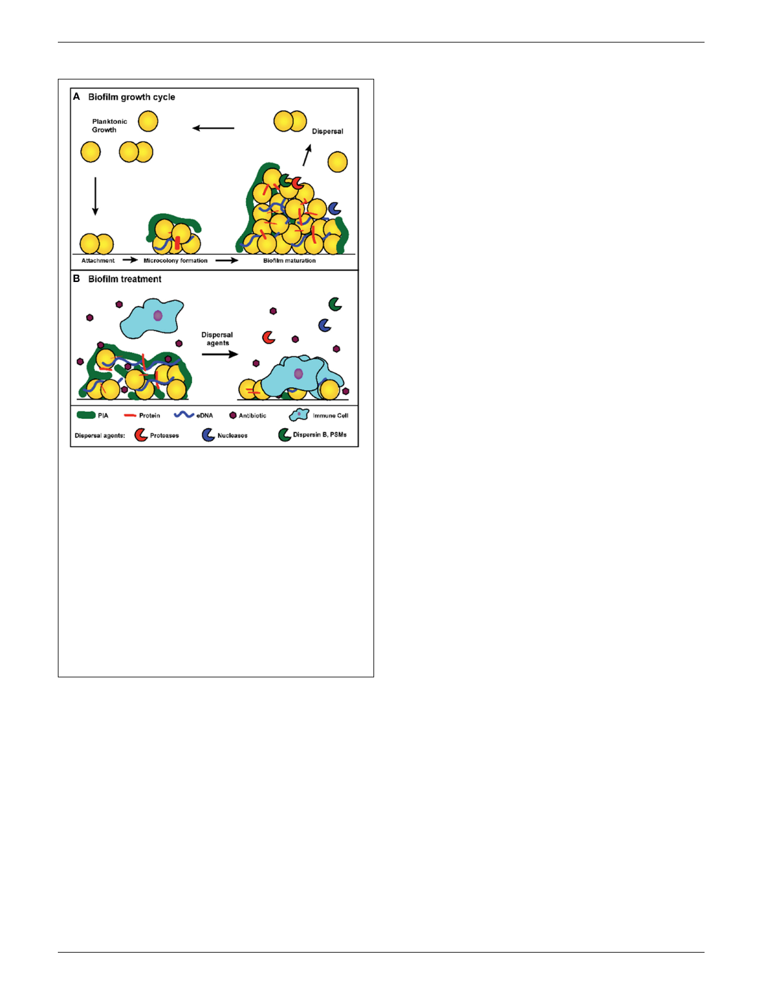

Lister and Horswill
S. aureus biofilm dispersal
infection or mediate an acute infection such as sepsis (Costerton
et al., 1999). The role played by the S. aureus quorum sensing sys-
tem during dispersal supports this model (Boles and Horswill,
2008; Lauderdale et al., 2010). Dispersal has been the focus of
many recent studies due to its importance in chronic infections
and the biofilm model of growth, and an analysis of major disper-
sal mechanisms has led to the development of dispersal-mediated
treatment options for biofilm infections (Kaplan, 2010; Boles
and Horswill, 2011). This review discusses the major mecha-
nisms for S. aureus biofilm dispersal. In addition, it analyzes
the potential for developing dispersal-mediated treatments for
biofilm infections (Figure 1B).
FIGURE 1 | (A) Model of S. aureus biofilm growth cycle. In summary, upon
coming into contact with a surface, planktonic cells attach through
surface-associated proteins. Following attachment, cells divide and begin
production of the extracellular matrix, which leads to the formation of a
microcolony. As cell division continues, biomass accumulates and a mature
biofilm is formed. Environmental signals within the biofilm trigger the
activation of dispersal mechanisms, and upon dispersal, cells re-enter a
planktonic growth state and can seed new sites for biofilm formation. (B)
Treatment of a S. aureus biofilm. Antibiotic exposure will kill susceptible
planktonic cells and metabolically active cells near the surface of the
biofilm. However, persister cells and metabolically dormant cells within the
biofilm survive and remain protected from immune defenses by the biofilm
matrix. Treatment with dispersal agents increases the effectiveness of
antibiotic penetration and promotes clearance. Antibiotic sensitive cells
within the biofilm are exposed and killed after degradation of the matrix,
and the antibiotic tolerant cells (such as persisters) survive and are
susceptible to the immune system.
cells within the biofilm by decreasing antibiotic diffusion rates.
However, this mechanism is dependent on the type of antibiotic,
as certain antibiotics are capable of penetrating the biofilm (Singh
et al., 2010). An alternative proposal is that antibiotic tolerance is
due to the development of physiologically dormant persister cells
that form stochastically during biofilm growth (Lewis, 2010). Due
to their decreased metabolic activity, they are inherently resistant
to antibiotics. Furthermore, persister cells develop at greater rates
within a biofilm than within actively growing planktonic cultures
(Singh et al., 2009). As such, they are thought to play a large role
in the recalcitrance of biofilm-associated infections.
Beyond offering resistance to clearance mechanisms, biofilms
also play an important role in the progression of chronic diseases.
Following the establishment of a biofilm, individual cells can dis-
perse from the original biofilm and either seed new sights of
THE STAPHYLOCOCCUS AUREUS BIOFILM MATRIX
The S. aureus biofilm matrix is a complex glue that encases all
of the cells in the mature structure, and it is thought to be com-
posed of host factors, secreted and lysis-derived proteins, polysac-
charide, and eDNA. The contribution of each of these factors
depends heavily on the strain background and on environmen-
tal conditions (Fitzpatrick et al., 2005; Abraham and Jefferson,
2012). Furthermore, the effectiveness of many dispersal mecha-
nisms is dependent on the matrix composition (Chaignon et al.,
2007; Izano et al., 2008). A brief background on the major com-
ponents of the biofilm matrix and factors involved in generating
these components will be provided.
A major constituent of the biofilm matrix is polysaccharide
intercellular adhesin (PIA), also known as polymeric N-acetyl-
glucosamine (PNAG) (O’Gara, 2007). PIA is an important com-
ponent in both S. aureus and S. epidermidis biofilms that is
produced by enzymes encoded in the icaADBC locus. PIA is
composed of β-1,6-linked N-acetylglucosamine polymer, and the
proteins encoded in the ica locus are responsible for the syn-
thesis, export, and modification of PIA. The PIA polymer plays
an important role in the structural integrity of biofilms in vitro
and in vivo, although numerous studies have identified S. aureus
strains capable of forming ica-independent biofilms (Beenken
et al., 2003; Fitzpatrick et al., 2005; Toledo-Arana et al., 2005;
Lauderdale et al., 2009; Brooks and Jefferson, 2014). The matrix
components of these biofilms were later identified as proteins and
eDNA (O’Neill et al., 2007, 2008; Rhode et al., 2007; Boles et al.,
2010), which function as intercellular adhesins in the absence
of PIA.
Many proteins have been implicated as important compo-
nents in attachment and biofilm matrix development. These
include surface-associated proteins such as protein A, fibrinogen-
binding proteins (FnBPA and FnBPB), S. aureus surface protein
(SasG), biofilm-associated protein (Bap), and clumping factor
B (ClfB) (Cucarella et al., 2001; Corrigan et al., 2007; O’Neill
et al., 2008; Merino et al., 2009; Geoghegan et al., 2010; Abraham
and Jefferson, 2012). Many of these factors play a role both in
attachment and accumulation. In addition, secreted proteins such
as extracellular adherence protein (Eap), and beta toxin (Hlb)
play a role in biofilm maturation (Huseby et al., 2010; Sugimoto
et al., 2013). However, the importance of individual proteins
varies largely between strains (Artini et al., 2013). For example,
Bap-dependent biofilms have not been identified in any human
isolates, and as such it is more likely that Bap plays a role in bovine